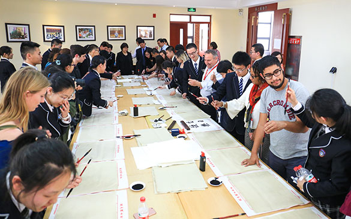
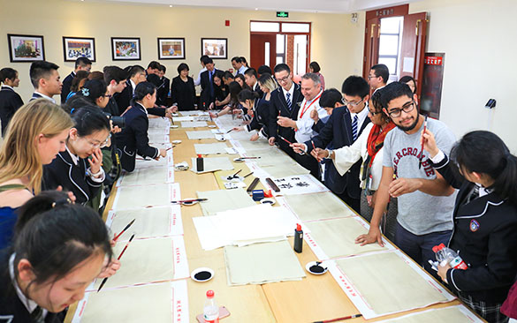

传统与现代的吴越文化之旅
吴越文化以太湖流域为中心，包含上海、江苏，浙江等地。其中上海又是海派文化的经典代表，是在中国江南传统文化的基础上，融合近现代文明逐步形成的特有文化现象。既有江南吴越文化的古典与雅致，又有国际大都市的现代与时尚，开放而又自成一体。苏州，有一个典雅的别名“姑苏“。姑苏文化历史源远流长，建城两千五百多年，文化积淀十分深厚。不仅体现在古城名镇、园林胜迹、丝绸刺绣等物化形态，还体现在昆曲、苏剧、评弹等门类齐全的艺术形态。吴越文化以鲜明的文化特征在交融、激荡、流变中形成统一的文化类型。
路线：上海-常州-苏州-北京
时间：2018.06.10 ~ 2018.06.22
项目简介
• 学校交流：与中国师生一同交流，体验中国传统文化课程，在学习互动中深入了解中国吴越文化特色。
 

• 文化遗产：游览豫园、城隍庙、玉佛寺、苏州拙政园、周庄水乡。感受吴越文化的古典与雅致，细腻与灵秀的文化风情。


• 当地文化：听一首吴侬软语的昆曲儿，徜徉在水乡古镇的柔情。深刻融入当地文化， 在交流中丰富对地区传统文化的认知。


• 结业后收获“文化交流小使者”证书，丰富个人文化背景。


行程安排
想和更多有趣的朋友同行， 现在就加入我们的旅途吧！